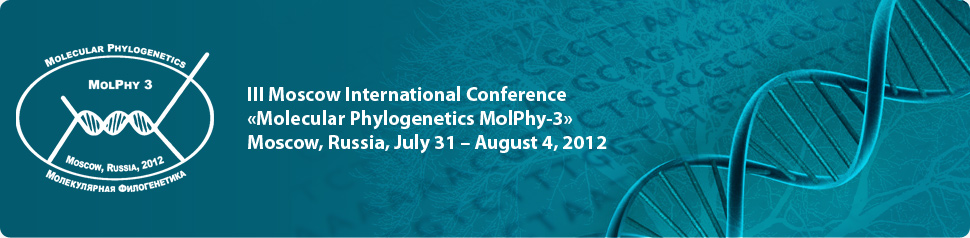

Society of Systematic Biologists
Home of Systematic Biology
Popular contentSyndicateCategories
User loginNavigationWho's onlineThere are currently 0 users and 4 guests online.
|
Call for SSB symposia at Evolution 2013SSB invites proposals for symposia to be held Evolution 2013 in Snowbird, UT. The society will sponsor two symposia, each consisting of 4-6 talks to occur over two sessions (i.e., during the morning or afternoon). Organizers of proposals should include a short description of the organizing theme of the proposed symposium, a list of speakers with affiliations, and contact information for the organizers. Funds are available for travel costs for speakers. Members who are interested in submitting a proposal are encouraged to contact Bryan Carstens (bryan.c.carstens@gmail.com) prior to submission. To submit a proposal, please send a pdf of your proposal to Bryan by October 1st, 2012. Frontiers in Phylogenetics Spring Symposium: Sequence Alignment and Tree EstimationBaird Auditorium TOPICS and SPEAKERS
Registration is free but required. Please send name, affiliation, e-mail and phone number to Sarah Kingston (kingstons 'at' si.edu). III Moscow International Conference “Molecular Phylogenetics MolPhy-3”, 31 July – 04 August, 2012 The conference mission is to provide a stimulating platform for the exchange of ideas and experiences in contemporary phylogenetics, molecular evolution and bioinformatics, and for developing methodology, algorithms, and applications for state-of-the-art analyses of molecular genetic data. The primary scope is in molecular phylogenetics and systematics, phyloinformatics, evolutionary genomics, reconstructing the Tree of Life, and applied phylogenetics. Postdoctoral fellowship in population genetics of insular snakes - University Of São Paulo/FapespThe Laboratory of Herpetology of the Museum of Zoology of the University of São Paulo seeks a highly motivated scientist with experience in molecular biology and genetics to receive a 24 month FAPESP Postdoctoral Fellowship (monthly salary: R$ 5,333.40, relocation funding available; for more information visit http://www.fapesp.br/en/5427). The successful applicant will employ next generation sequencing methods to produce large amounts of genomic data to study the colonization processes of snakes species in the insular formations of the Galapagos Archipelago, Brazilian continental islands, Lesser Antilles, and Baja California as part of the project “Origin and evolution of snakes and their diversification in the Neotropics: a multidisciplinary approach,” which aims to investigate the systematics, phylogeny, ecology, and biogeography of Neotropical snakes. iEvoBio 2012 Challenge: Synthesizing phylogenies
São Paulo School of Advanced Sciences - Evolution (SPSAS-evo)We are pleased to announce the São Paulo School of Advanced Sciences - Evolution (SPSAS-evo) to be held in August 19-31, 2012, in Ilhabela, São Paulo, Brazil. This is the 6th edition of an ambitious initiative by the Fundação de Amparo à Pesquisa do Estado de São Paulo (FAPESP), whose main purpose is to bring together leading experts and outstanding students/post-docs from all over the world in order to advance areas considered strategic for Brazilian science. SPSAS-evo will be a two-week course centered on a range of topics in Evolutionary Biology taught by a host of world class experts conducting cutting-edge research in Evolution. The main goals are to generate authoritative outreach material focused on Evolution and to showcase ongoing research in São Paulo, aiming at attracting the most promising students, post-docs and young faculty to the state of São Paulo. Systematics beyond phylogenetics: Annual meeting of the Société Française de Systématique - 201210 October 2012, Amphitheater of the INEE, 3 rue Michel-Ange, 75016 Paris. University of California, Davis Tenure-track Evolution of Organismal Diversity
which contains additional information about the position. These should include: curriculum vitae, description of current and projected research, summary of teaching interests and experience, and up to five publications. Applicants should also provide the information requested for three referees. Once entered, referees will be prompted by email with upload instructions for their letters. Closing Date: Open until filled, but all application materials, including letters of recommendation, must be received by February 6, 2012, to assure full consideration. Administrative contact: Carla Munoz (camunoz@ucdavis.edu). Faculty contacts: Peter Wainwright, Michael Turelli, and Rick Grosberg. The University of California is an Equal Opportunity/Affirmative Action Employer with a strong institutional commitment to the development of a climate that supports equality of opportunity and respect for differences. Assistant or Associate Curator of Ornithology American Museum of Natural HistoryThe American Museum of Natural History (AMNH) in New York is inviting applications for a curatorial position at the Assistant or Associate Curator level in the Division of Vertebrate Zoology, Department of Ornithology. This is a tenure track position with the salary and duration of review for tenure being negotiable depending on the candidate's degree of professional experience and accomplishment. We seek candidates whose research addresses fundamental questions involving the systematics and evolutionary biology of living birds. The successful candidate will have an accomplished record of scholarship and publication as well as capabilities for leadership within the Division and Department. Candidates who can contribute to Museum initiatives in genomics, phenomics (large-scale phenotypic analysis), and to the global exploration of avian diversity are especially encouraged to apply. Collection and/or field-based research are highly desirable. The ability to communicate effectively within the scholarly community and to a larger public is important. AMNH curators are expected to maintain a high level of productivity in original research, to provide curatorial oversight of relevant collections, and to seek extramural funding. Other responsibilities may include serving on committees and participating in Museum sponsored exhibits and educational programs, and in the Comparative Biology Ph.D. program at the Richard Gilder Graduate School. Candidates should have postdoctoral or professional employment experience. |
Latest issue
EVOLDIRphylobabble.orgiPhyloPhyloseminarSystematics AssociationNESCentThe Genealogical World of Phylogenetic NetworksCiteULike PhylogenyEvolutionary Bioinformatics
CladisticsBMC Evolutionary Biology
Molecular Biology and Evolution |
 Follow us on Twitter
Follow us on Twitter Find us on Facebook
Find us on Facebook The
The